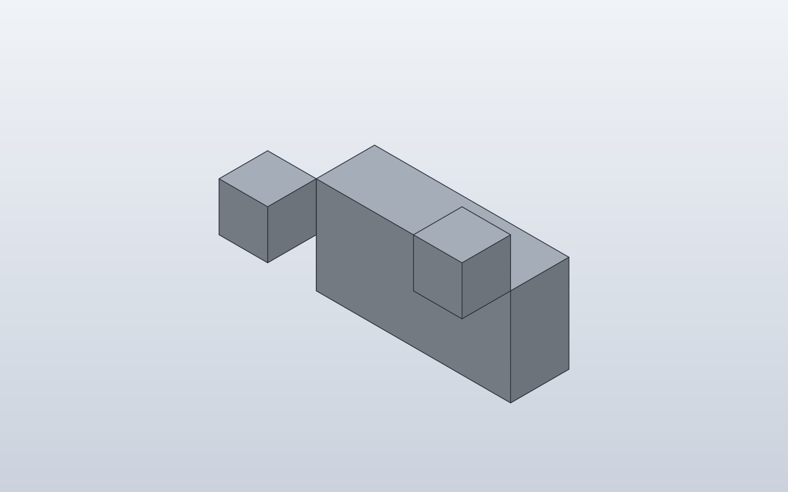
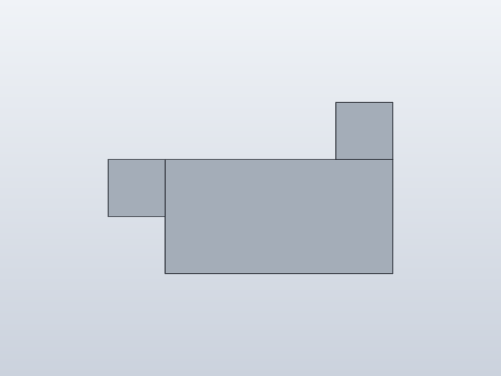
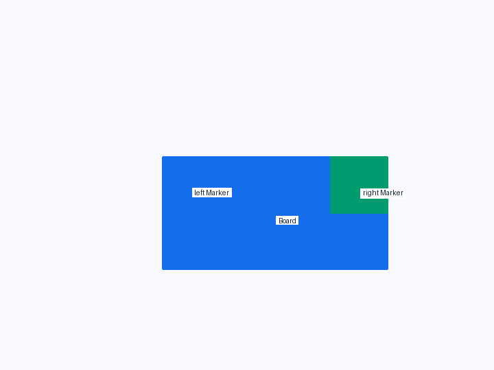
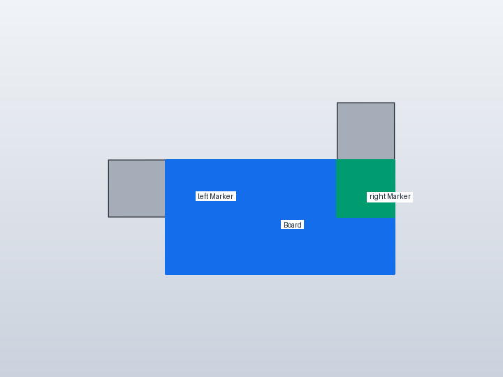
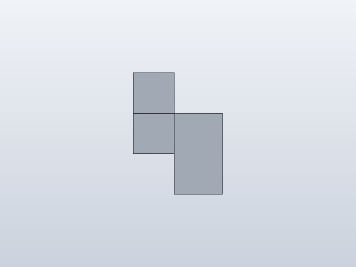
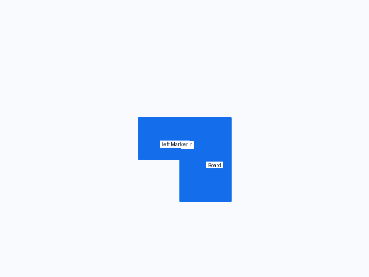
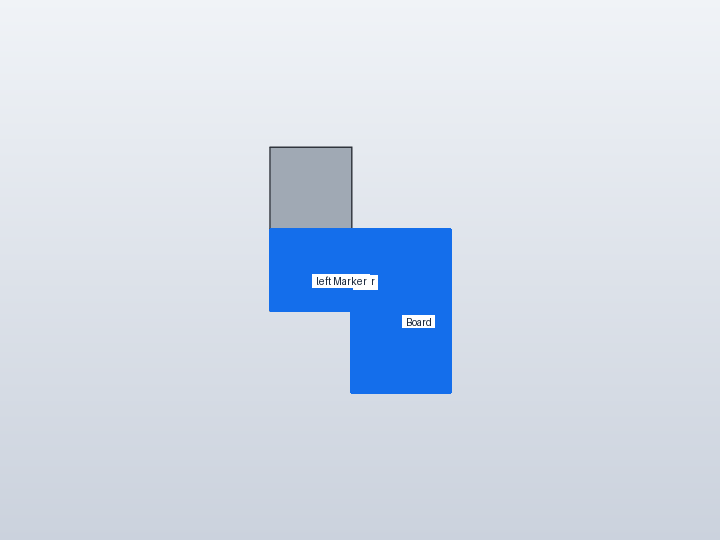
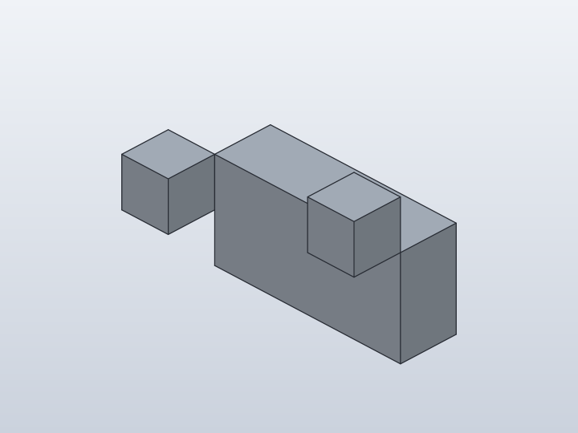
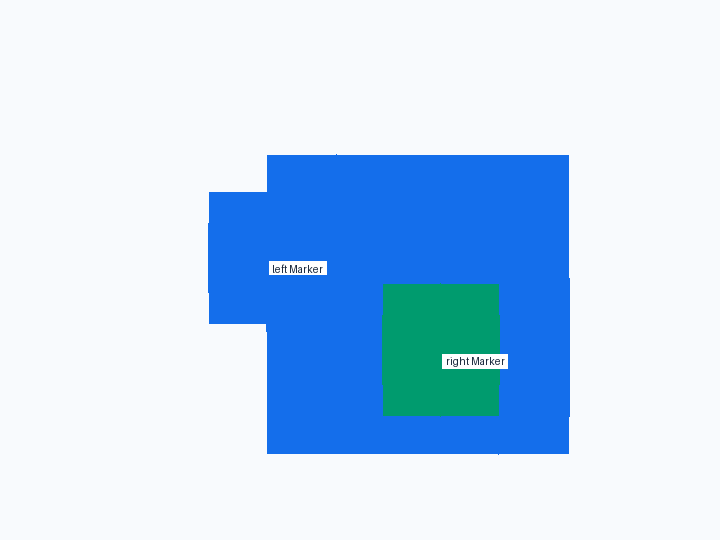
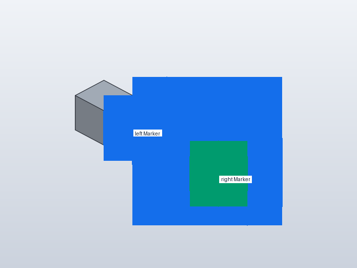

Forge qualification case
Anchors on XZ-profile extrusion
Verify standard corner anchors on geometry authored as an XZ polygon and extruded in Y.










1. Forge contract
Public API
Polygon2D(..., plane='XZ', world=True).extrude(...); standard corner Anchors
Internal Forge model
Forge recovers rectangular bounds/topology from the XZ profile while preserving symbolic width and height.
SolidCraft lowering
Corner attachments lower to native topology references on the extruded board; no special HUB75-specific placement logic is involved.
2. Native verification
Expected result
Left and right markers attach to their respective front-top corners with mirrored spatial results.
Parametric mutation
Change board width/height from 40x20 to 80x40 mm; both markers follow their own corners.
Evidence
- Fixture source
- Generated command JSON
- results.json
- measurements-size-80x40.json
- measurements.json
- change-size.json
- joint-inspect.json
- model-size-80x40.sc
- model.sc
- model.step
- qualification-result.json
- validation.json
- visual-validation.json
- camera-front.json
- camera-iso.json
- camera-right.json
- Native snapshot: model.png
- Native snapshot: model-front.png
- Native snapshot: goal-front.png
- Native snapshot: overlay-front.png
- Native snapshot: model-right.png
- Native snapshot: goal-right.png
- Native snapshot: overlay-right.png
- Native snapshot: model-iso.png
- Native snapshot: goal-iso.png
- Native snapshot: overlay-iso.png


3. Results
size 80x40 · 3 bodies · measurements-size-80x40.json
Parameters
| Name | Value |
|---|---|
Board_depth | 12.0 |
board_width | 80.0 |
board_height | 40.0 |
Bodies
| Body | BBox min | BBox max |
|---|---|---|
| Board | [-40, 0, 0] | [40, 12, 40] |
| Marker | [30, -10, 40] | [40, 0, 50] |
| Marker (Marker:2) | [-50, -10, 30] | [-40, 0, 40] |
Baseline · 3 bodies · measurements.json
Parameters
| Name | Value |
|---|---|
Board_depth | 12.0 |
board_width | 40.0 |
board_height | 20.0 |
Bodies
| Body | BBox min | BBox max |
|---|---|---|
| Board | [-20, 0, 0] | [20, 12, 20] |
| Marker | [10, -10, 20] | [20, 0, 30] |
| Marker (Marker:2) | [-30, -10, 10] | [-20, 0, 20] |
Semantic validation
| Status | Level | Check | Expected | Actual |
|---|---|---|---|---|
| FAIL | Q4 | declared target geometry | [{"label": "Board", "min": [-20, 0, 0], "max": [20, 12, 20]}, {"label": "right Marker", "min": [10, -10, 10], "max": [20, 0, 20]}, {"label": "left Marker", "min": [-20, -10, 10], "max": [-10, 0, 20]}] | [{"min": [-20.0, 0.0, 0.0], "max": [20.0, 12.0, 20.0]}, {"min": [10.0, -10.0, 20.0], "max": [20.0, 0.0, 30.0]}, {"min": [-30.0, -10.0, 10.0], "max": [-20.0, 0.0, 20.0]}] |
| PASS | Q4 | two markers | 2 | 2 |
| FAIL | Q4 | right BACK_TOP corner alignment | {"min": [10.0, -10, 10], "max": [20.0, 0, 20]} | [[[10.0, -10.0, 20.0], [20.0, 0.0, 30.0]], [[-30.0, -10.0, 10.0], [-20.0, 0.0, 20.0]]] |
| FAIL | Q4 | left BACK_TOP corner alignment | {"min": [-20.0, -10, 10], "max": [-10.0, 0, 20]} | [[[10.0, -10.0, 20.0], [20.0, 0.0, 30.0]], [[-30.0, -10.0, 10.0], [-20.0, 0.0, 20.0]]] |
| FAIL | Q5 | right corner follows size mutation | {"min": [30.0, -10, 30], "max": [40.0, 0, 40]} | [[[30.0, -10.0, 40.0], [40.0, 0.0, 50.0]], [[-50.0, -10.0, 30.0], [-40.0, 0.0, 40.0]]] |
| FAIL | Q5 | left corner follows size mutation | {"min": [-40.0, -10, 30], "max": [-30.0, 0, 40]} | [[[30.0, -10.0, 40.0], [40.0, 0.0, 50.0]], [[-50.0, -10.0, 30.0], [-40.0, 0.0, 40.0]]] |
4. Generated native relationship/command path
[
{
"command": "joint.create",
"params": {
"type": "rigid",
"name": "Attach Marker:1 to Board:1",
"a": {
"occurrence": "Board:1",
"edge": [
20.0,
0.0,
10.0
],
"on": [
0.0,
0.0,
10.0
],
"corner": [
20.0,
0.0,
20.0
]
},
"b": {
"occurrence": "Marker:1",
"edge": [
20.0,
0.0,
15.0
],
"on": [
15.0,
0.0,
15.0
],
"corner": [
20.0,
0.0,
20.0
]
}
}
},
{
"command": "joint.create",
"params": {
"type": "rigid",
"name": "Attach Marker:2 to Board:1",
"a": {
"occurrence": "Board:1",
"edge": [
-20.0,
0.0,
10.0
],
"on": [
0.0,
0.0,
10.0
],
"corner": [
-20.0,
0.0,
20.0
]
},
"b": {
"occurrence": "Marker:2",
"edge": [
-20.0,
0.0,
15.0
],
"on": [
-15.0,
0.0,
15.0
],
"corner": [
-20.0,
0.0,
20.0
]
}
}
}
]5. Reference models
These comparisons clarify concepts; Forge does not promise API compatibility with them.
6. Fixture source
class Board:
width = 40.0
height = 20.0
depth = 12.0
def build(self):
half = self.width / 2
profile = Polygon2D(
[
("lower_left", (-half, 0)),
("lower_right", (half, 0)),
("upper_right", (half, self.height)),
("upper_left", (-half, self.height)),
],
plane="XZ",
world=True,
)
return profile.extrude(
self.depth,
direction=Direction.POSITIVE,
).with_material(
"test board",
density_g_cm3=0.55,
)
class Marker:
def build(self):
return Box(10, 10, 10)
class XzAnchor:
board_width = 40.0
board_height = 20.0
def build(self):
board = Board(
width=self.board_width,
height=self.board_height,
)
right_marker = Marker().attach(
board,
parent=Anchor.FRONT_TOP_RIGHT,
child=Anchor.BACK_TOP_RIGHT,
)
left_marker = Marker().attach(
board,
parent=Anchor.FRONT_TOP_LEFT,
child=Anchor.BACK_TOP_LEFT,
)
return board + right_marker + left_marker
XzAnchor()